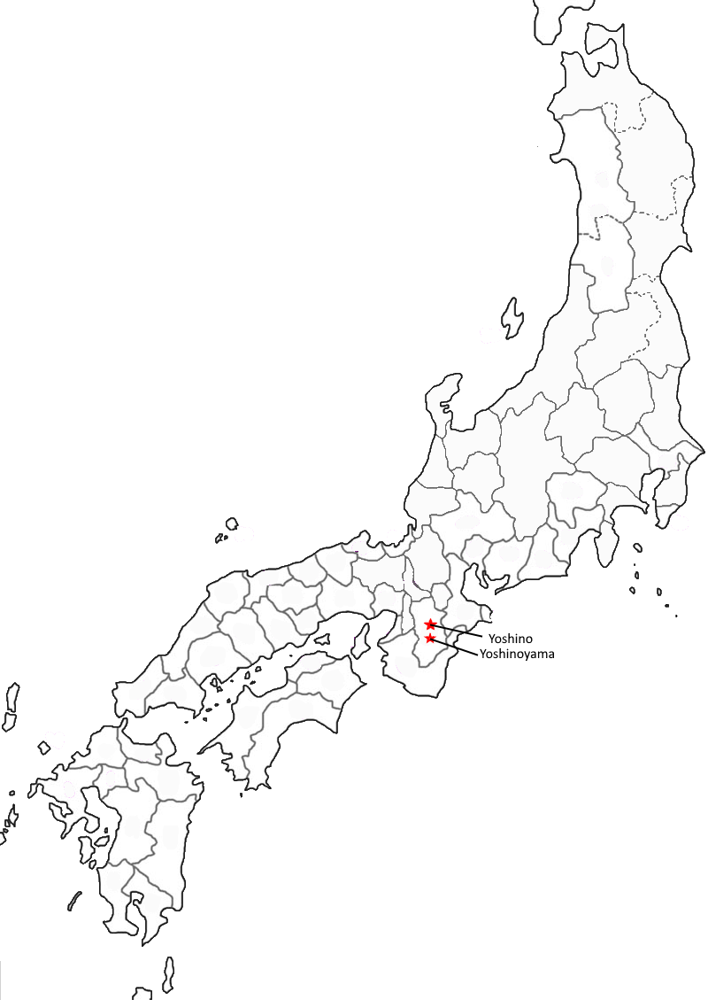

Poem #3
harugasumi
tateru ya izuko
miyoshino no
yoshino no yama ni
yuki wa furitsutsu
Where are we to seek
the layered haze of springtime
while snow still falls
in the hills of Yoshino,
the hills of fair Yoshino?
Poem #60
miyoshino no
yamabe ni sakeru
sakurabana
yuki ka to nomi zo
ayamatarekeru
Flowering cherries
blossoming in the mountains
of fair Yoshino -
betrayed by unwary eyes,
we mistake them for snowflakes.
Poem #124
yoshinogawa
kishi no yamabuki
fuku kaze ni
soko no kage sae
utsuroinikeri
Even their reflections
in the stream depths are scattered
by the blowing wind:
kerria flowers on the bank
of the Yoshino River.
Poem #317
yū sareba
koromode samushi
miyoshino no
yoshino no yama ni
miyuki fururashi
As night settles in,
the cold finds its way through sleeves.
Snow will be falling
at fair Yoshino, falling
in the hills of Yoshino.
Poem #321
furusato wa
yoshino no yama shi
chikakereba
hitohi mo miyuki
furanu hi wa nashi
Close to the old place
rise the heights of Yoshino,
wintry and remote,
and thus there is not a day
when the fair snow does not fall.
Poem #325
miyoshino no
yama no shirayuki
tsumorurashi
furusato samuku
narimasaru nari
The white flakes of snow
in fair Yoshino's mountains
must be piling high,
for cold strikes ever sharper
at the ancient capital.
Poem #327
miyoshino no
yama no shirayuki
fumiwakete
irinishi hito no
otozure mo senu
Not even so much
as a message reaches us
from one who entered
the hills of fair Yoshino,
finding his way through white drifts.
Poem #332
asaborake
ariake no tsuki to
miru made ni
yoshino no sato ni
fureru shirayuki
In dawn's first dim light
we might almost mistake them
for morning moonbeams -
the snowflakes newly fallen
at Yoshino-no-sato.
Poem #60
miyoshino no
yamabe ni sakeru
sakurabana
yuki ka to nomi zo
ayamatarekeru
Flowering cherries
blossoming in the mountains
of fair Yoshino -
betrayed by unwary eyes,
we mistake them for snowflakes.

Cultural significance
Yoshino was associated with Japanese emperors and divinity; this was in part thanks to Kakinomoto no Hitomaro and the people who copied his praise for Yoshino (Denecke). Yoshino was the place in which “the high shining-sun prince” (Emperor Tenmu) had set up his headquarters, the place Empress Jitо̄'s heart was drawn to. In the Yoshino Praise Poems, the river that flows unceasingly (Yoshino River) and the mountain that commands the heights (Yoshino Mountain) are brought up, which also give Yoshino a hon'i. (Duthie) Yoshino was also believed to be the southern gate to allow spring into Yamato. (Plutschow)
Yoshino River was known for swiftness, waves over rocks, water falls, wind from the mountains, and a variety of scenery throughout the year (Miner).
Mount Yoshino in Yamato was famous for scenery the whole year, but most for its cherry flowers, the most celebrated of all sites for the mountain (yamazakura) kind (Miner).